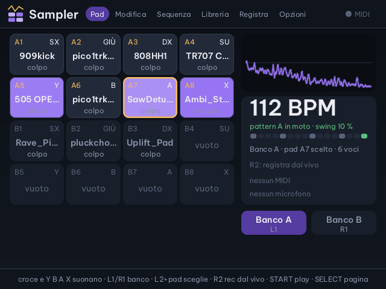
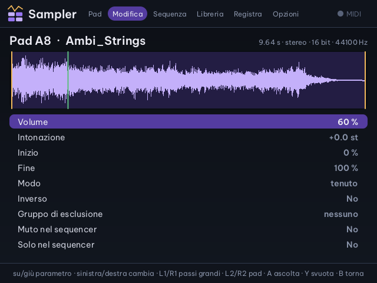
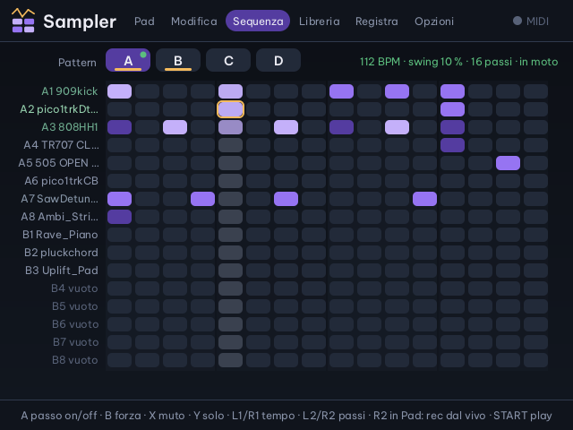
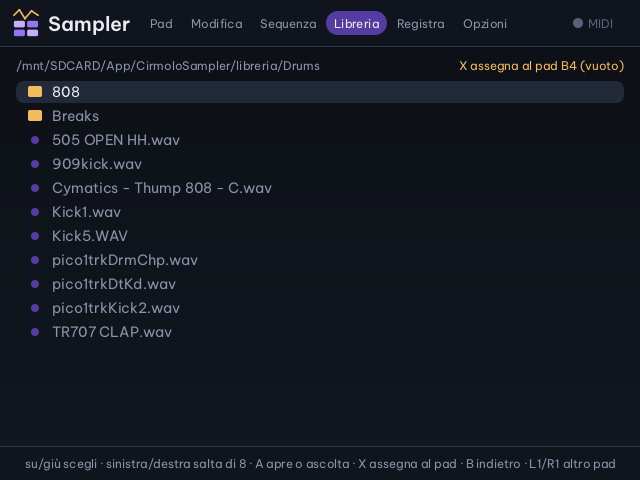
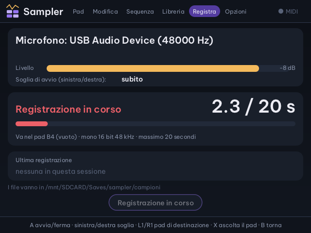
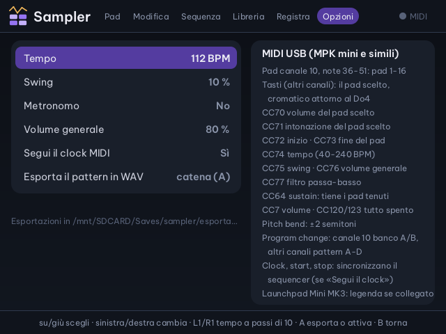
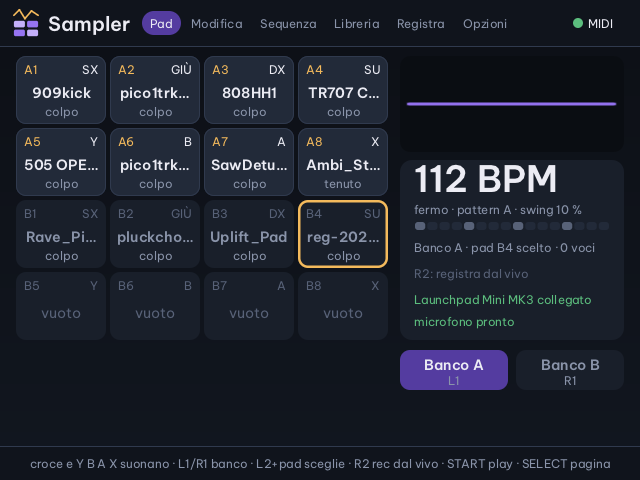
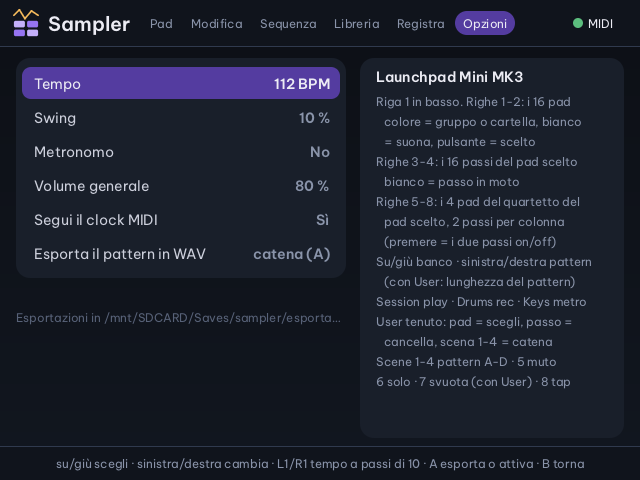

Cirmolo · app musicale per Miyoo Flip
Cirmolo Sampler
Un campionatore a pad: metti un suono su ognuno dei sedici pad, lo suoni con i tasti della Flip o con i pad di una tastiera MIDI e lo metti in sequenza in sedici passi.
I suoni arrivano da una libreria di serie, dai tuoi WAV o dal microfono USB. Con un Launchpad Mini MK3 pad e passi si accendono di colori.
Nella Home di Cirmolo, sotto Musica. Le schermate vengono dal codice dell'app, compilato sul PC, con i campioni veri della libreria di serie.

Le sei pagine
Pad, Modifica, Sequenza, Libreria, Registra, Opzioni
SELECT passa da una pagina all'altra, START fa partire e ferma la sequenza da qualunque pagina, MENU esce (A o giù conferma). Pad, pattern e opzioni restano salvati.
Pagina Pad
| Croce, Y B A X | suonano gli otto pad del banco |
| L1 · R1 | banco A · banco B |
| L2 tenuto + tasto | sceglie il pad senza suonarlo |
| R2 | registrazione dal vivo: i colpi che suoni finiscono nel pattern |
| Levetta sinistra | in orizzontale piega l'intonazione |
| Levetta destra | in verticale il filtro passa-basso |
Colpo, tenuto, loop
Un pad può suonare tutto il campione a ogni colpo, solo finché tieni il tasto, oppure in loop.
Gruppi di esclusione
Quattro gruppi: un pad zittisce gli altri del suo gruppo, come il charleston aperto con quello chiuso.
Ritaglio e inverso
Inizio e fine del campione al centesimo, e il campione al contrario.
Intonazione
Più o meno dodici semitoni; nella pagina Modifica la levetta destra la ritocca di un decimo.

Pagina Modifica
| Su · giù | sceglie il parametro |
| Sinistra · destra | lo cambia; L1 e R1 a passi grandi |
| L2 · R2 | pad precedente · successivo |
| A | fa sentire il pad |
| Y | svuota il pad |
| B | torna ai pad |
Parametri: volume (fino al 150%), intonazione, inizio, fine, modo, inverso, gruppo di esclusione, muto e solo nel sequencer.
Sequenza
Sedici pad per sedici passi
Una riga per pad, una colonna per passo. Quattro pattern, A, B, C e D, ognuno con la sua lunghezza da 1 a 16 passi, da mettere in catena. Il tempo va da 40 a 240 BPM, con lo swing.

Pagina Sequenza
| Croce | sposta il cursore; in cima c'è la riga dei pattern |
| A | accende o spegne il passo |
| B | forza del passo: normale, forte, piano |
| X · Y | muto · solo per il pad della riga |
| L1 · R1 | tempo, un BPM alla volta |
| L2 · R2 | pattern più corto · più lungo |
| START | play e stop |
Sulla riga dei pattern: sinistra e destra scelgono il pattern, A lo mette in catena, B lo copia nel successivo, Y lo svuota.
Da dove vengono i suoni
La libreria, i tuoi WAV, il microfono
La pagina Libreria apre due cartelle: le tue registrazioni e la libreria di serie, con 175 campioni divisi in batterie, bassi, pad, oscillatori e altro. A fa sentire un file, X lo mette nel pad scelto. Vanno bene WAV mono o stereo, a 8, 16 o 24 bit o in virgola mobile, a qualsiasi frequenza, fino a 30 secondi.



La Flip non ha un microfono: serve un microfono USB-C o un adattatore. Il sampler lo cerca ogni tre secondi, quindi si può collegare anche ad app aperta. La registrazione finisce nel pad scelto e resta tra «Le mie registrazioni».
La libreria di serie viene dalla release ufficiale 1.5.0 di LittleGPTracker (licenza GPLv3), che Cirmolo includeva fino a ottobre 2026: la licenza e la provenienza sono nella cartella App/CirmoloSampler/libreria.
Tastiera MIDI
Con la MPK mini o una tastiera MIDI
Collegata alla porta USB-C, anche ad app aperta, una tastiera con i pad suona il sampler come una drum machine. La pagina Opzioni ricorda la mappa.
Note e pad
| Pad, canale 10 | note 36–51: i pad da 1 a 16 |
| Tasti | su un altro canale suonano il pad scelto, cromatico attorno al Do4 |
| Sustain (CC64) | tiene i pad tenuti |
| Pitch bend | più o meno due semitoni |
| Program change | sul canale 10 banco A o B, sugli altri pattern A–D |
| Clock, start, stop | sincronizzano il sequencer, se «Segui il clock MIDI» è acceso |
Manopole
| CC70 · CC71 | volume · intonazione del pad scelto |
| CC72 · CC73 | inizio · fine del pad |
| CC74 | tempo, da 40 a 240 BPM |
| CC75 · CC76 | swing · volume generale |
| CC77 | filtro passa-basso |
| CC7 | volume |
| CC120 · CC123 | tutto spento |
Launchpad Mini MK3
Pad e passi accesi di colori
Il sampler riconosce il Launchpad Mini MK3 dal nome, lo mette in modalità Programmer e ne accende i LED: i pad prendono il colore della loro cartella o del loro gruppo, i passi seguono il sequencer. All'uscita il Launchpad torna com'era.
- Righe 1 e 2, in basso: i 16 pad. Il colore è quello del gruppo o della cartella del campione; bianco mentre suona, pulsante se è il pad scelto.
- Righe 3 e 4: i 16 passi del pad scelto. Il passo che suona diventa bianco.
- Righe da 5 a 8: il quartetto del pad scelto. Quattro pad, due passi per pad in ogni colonna: premendo si accendono o si spengono.
- In alto. ▲ e ▼ scelgono il banco A o B, ◀ e ▶ il pattern (con User: la lunghezza). Session suona, Drums registra dal vivo, Keys accende il metronomo.
- A destra, dall'alto. I pattern A–D (verde quello che suona, lampeggia chi è in catena), poi muto e solo del pad scelto, svuota il pattern (solo con User tenuto) e tap tempo.
- User tenuto: un pad lo sceglie senza suonarlo, un passo lo cancella, i tasti dei pattern li mettono in catena.


File sulla scheda SD
Registrazioni, esportazioni e stato
I nomi dei file hanno la data e l'ora: niente si sovrascrive.
Saves/sampler/campioni/reg-2026-10-12-170647.wavle registrazioni dal microfonoSaves/sampler/esportazioni/pattern-A-…wavil pattern o la catena esportati, WAV stereo a 16 bitSaves/sampler/stato.txtpad, pattern e opzioniApp/CirmoloSampler/libreriala libreria di serieSaves/spruce/cirmolo-sampler.logil registro dell'appApp/CirmoloSampler/srci sorgenti in C, con le prove automatiche
Le altre app